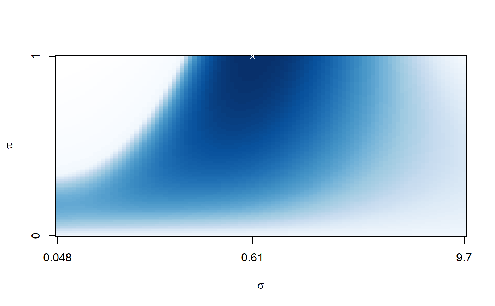

Plots the loss for different combinations of scaling (sigma) and weighting (pi) parameters.
# S3 method for cornet plot(x, ...)
| x | cornet object |
|---|---|
| ... | further arguments (not applicable) |
This function plots the evaluation loss (cvm).
Whereas the matrix has sigma in the rows, and pi in the columns,
the plot has sigma on the \(x\)-axis, and pi on the \(y\)-axis.
For all combinations of sigma and pi, the colour indicates the loss.
If the R package RColorBrewer is installed,
blue represents low. Otherwise, red represents low.
White always represents high.
n <- 100; p <- 200 y <- rnorm(n) X <- matrix(rnorm(n*p),nrow=n,ncol=p) net <- cornet(y=y,cutoff=0,X=X) plot(net)